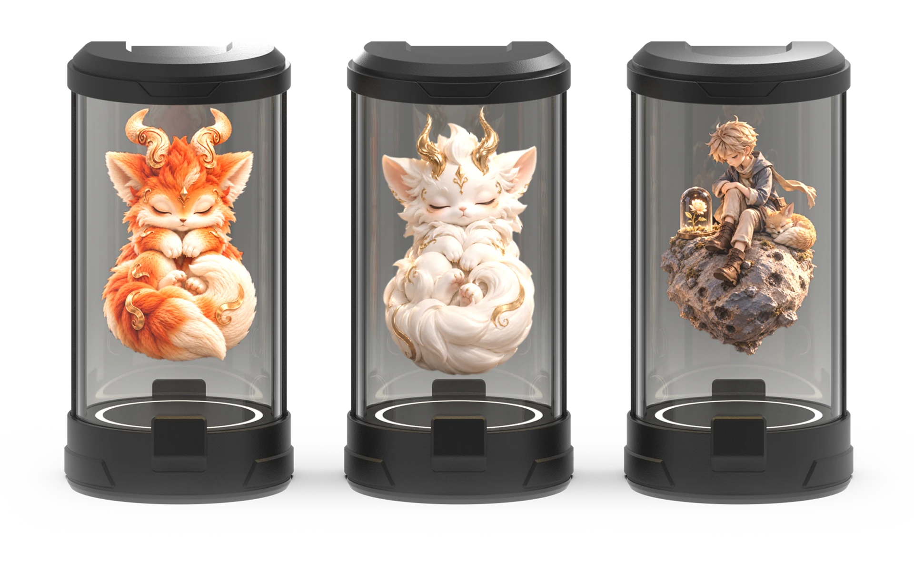
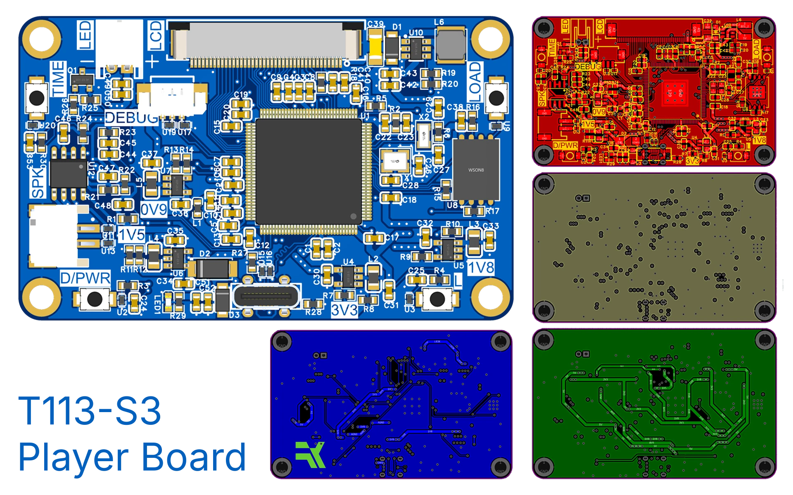
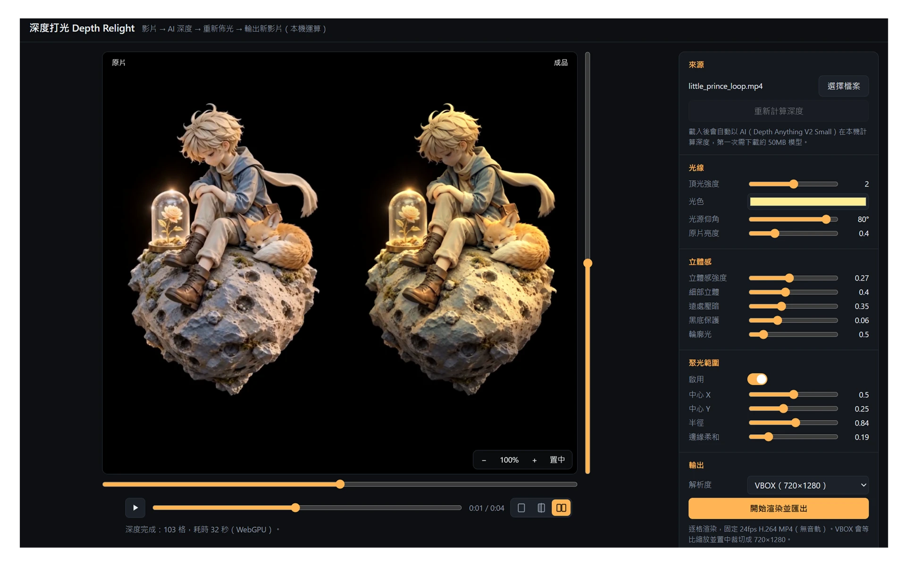

透明艙動態夜燈
讓角色如同駐立於透明艙體中。
在透明圓柱艙體裡，角色影像與燈光一起構成夜燈的觀看體驗。我用深度佈光工具準備角色素材，再透過自製的 LVGL 播放器呈現。自製控制板將直式顯示、燈條、音訊與實體按鍵整合到同一個裝置。
開發範圍ARM Cortex-A7 控制板 PCB 設計、LVGL 播放器與按鍵韌體、WebGL 深度佈光工具，以及工業與機構設計。

01 / 系統架構
以 T113-S3 整合顯示、照明與音訊
自製 4 層控制板把直式顯示、素材儲存、燈光、音訊與實體按鍵整合在同一塊板上。
直式顯示與素材儲存
5.5 吋直式面板以 SPI 初始化、RGB666 顯示，素材存於 NAND。
雙路 PWM 調光
背光與 5 V COB 燈條各自以 PWM 驅動，由同一組五段亮度同步切換。
USB-C 與音訊
單一 USB-C 供電，並以大容量儲存模式傳輸素材；LM4871 驅動喇叭。

02 / 實作細節
深度佈光素材與按鍵播放
自製瀏覽器工具重新調整角色光影，再由自行開發的 LVGL 播放器在裝置上播放。
AI 深度重新佈光
以 Depth Anything V2 估算深度，WebGL2 依形體計算側光與輪廓光。
影片防閃爍與輸出
平滑相鄰畫格深度以減少閃爍，再裁切為直式 24 fps H.264 影片。
四顆實體按鍵
分別負責調光與休眠、音效與音量、角色與定時，LOAD 鍵供韌體燒錄。

03 / 成果
可切換角色的透明艙動態夜燈
完成可切換角色與音效的透明艙動態夜燈實機，整合自製 T113-S3 控制板、LVGL 播放器、按鍵韌體與透明艙體機構。實機能以按鍵切換五段亮度、角色與音效，並支援音量調整、1／2／3 小時定時與深度休眠喚醒；面板色序、低亮度溫升、USB 傳檔與音訊品質皆已完成驗證。